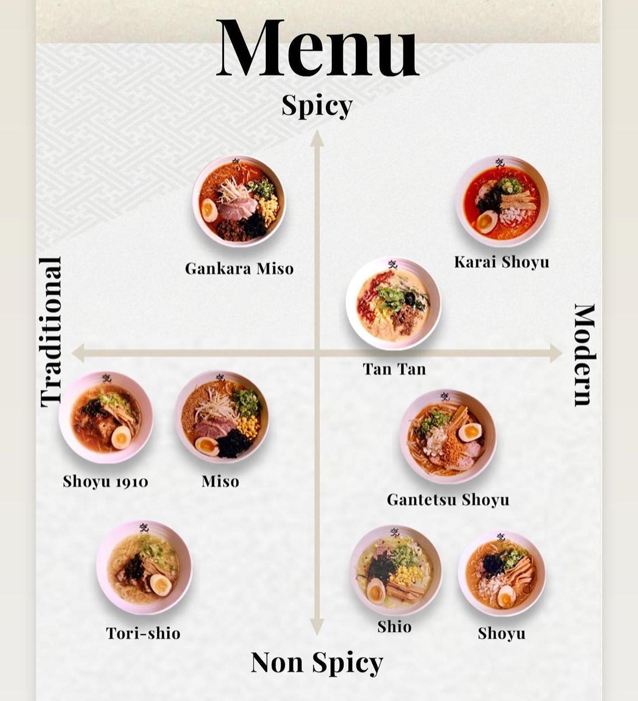

Hi there! My name is Aria Siriouthay, I am 21 years old and currently live in Dracut but
was born and raised in Lowell. I am a senior in Computer Science at Umass Lowell. This
is my first GUI learning experience, so my goal in this class is to strengthen my GUI
knowledge and learn some new skills.
Read on to learn more about me!
| Name | Age | Color | Personality |
|---|---|---|---|
| Gracie | 1 | Grey and White | Playful and sweet |
| Tango | 15 | Black | Affectionate and talkative |
The grey cat is named Gracie. I adopted her nearly 2 months ago from the Lowell Humane Society. She is only 1 year old and is a ball of energy! If you haven't noticed from the photo, she does not have a tail. She was originally a stray that was found with a severe injury to her tail, which required an amputation. Despite the lack of tail, she is a very happy girl now!
The black cat is named Tango (don't worry, he still has his tail). He is about 15 years old, he used to be my grandmother's cat but I became his primary caretaker last year. Although he is old in age, he is young in spirit! He loves attention and getting treats.
When I'm not taking care of my cats, I enjoy spending my time doing my nails. Currently, I only do nails on myself as a hobby. I'm not completely confident in my abilities to work on others, but maybe one day I'll change my mind! I find it relaxing and an outlet to express my creativity. My love for nails and nail art began when I was in high school.
I also enjoy going out to eat. My boyfriend and I like finding new, interesting restaurants to try out. My favorite foods are sushi, ramen, and anything matcha! While I have lost track of all the places I've eaten at, I'll talk about my long-time favorite Japanese ramen spot in Boston, Ma.
When you bring up ramen, most people think of the typical instant ramen that you can buy from the grocery store. However, ramen at this restaurant is the closest to the authenic ramen you would see in Japan. After discovering this spot nearly 3 years ago, I've stuck with it ever since as no other ramen shop can truly compare.
I like to try something different each time I come here, but my absolute favorites would have to be the Shoyu 1910 and the Gantetsu Shoyu.
If you are ever in Boston and are craving a delicious comforting soup, this is the place to go!
| Name | Age | Hobbies |
|---|---|---|
| Aria Siriouthay | 21 | Taking care of my pets, nails, and going out to eat |
Thank you so much for reading!